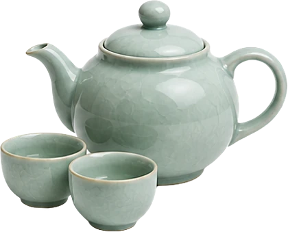
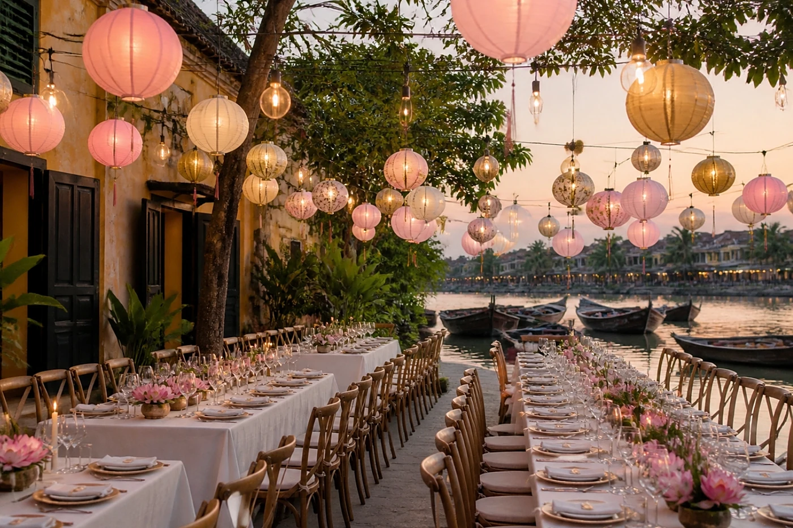
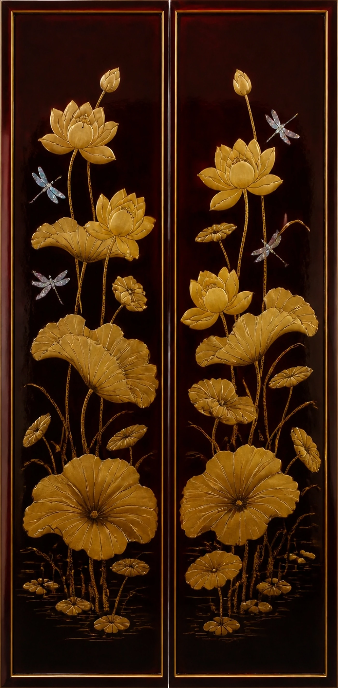

MariageLinh&Thomas20 · 03 · 2027
MariageLinh&Thomas20 · 03 · 2027


Le programme
Samedi 20 mars 2027

15 h 00Cérémonie des familles devant l’autel des ancêtres- 16 h 30Échange des alliances au bord de la rivière
- 17 h 30Cocktail au jardin des lotus
- 19 h 30Dîner sous les lanternes de soie
- 21 h 30Toasts « Một, hai, ba, dô ! »
- 23 h 00Gâteau des mariés
Le lieu

Maison des Lotus
Hội An

Tenue
Jardin de printemps
Rose lotus, vert jade, ivoire, une touche d'or. Un áo dài est le bienvenu pour celles et ceux qui le souhaitent, sans aucune obligation : une robe fluide ou un costume clair conviennent tout autant.
Il reste
--jours
--heures
--minutes
Votre réponse
Merci de répondre avant le 1er février 2027.
Je serai présent·eJe ne pourrai pas venir